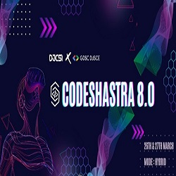
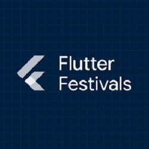
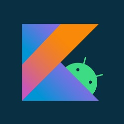
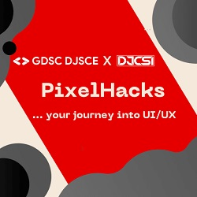
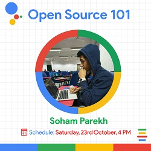
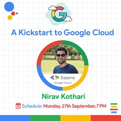

GDSC DJSCE
Don't miss out on learning opportunities GDSC has to offer!
Don't miss out on learning opportunities GDSC has to offer!
Co-Committee Interviews On Their Way!!
Keep checking our website as we shall update the details soon.
Click on the Button below to Register Yourselves!!
|  | GDSC x DJCSI presents Codeshastra 8.0, a 24 hour hybrid hackathon. Team size:1-4 March 26-27,2022 |
|  | Getting Started With Flutter - Flutter Festival GDSC DJSCE Date: Mar 1, 2022 Now that Flutter festival is here, How does one get started with Flutter? Funny you ask because we have just the right thing for you. ✨ GDSC DJSCE, in collaboration with GDSC VIT Mumbai, GDSC VJTI, GDSC UMIT, and GDSCMIET presents, Shrihriday Bhagwat, a self-taught Flutter developer and the Founder and CEO of Codeaamy coming in to help you in getting started with Flutter. |
|  | Android Study Jams 2021 - Session 3 Date: Dec 11, 2021 Students had to complete the Android basics in Kotlin course: https://developer.android.com/courses/android-basics-kotlin/course Apart from this, 3 sessions were organized. In the first session, a brief introduction on the event was given and students were made familiar about what they were supposed to do. In the second and third session, basics of Kotlin were covered and implemented in an app. No of participants - About 60+ registrations. 5 completed the entire course and 2 of them also built an app which was an optional task. |
| Android Study Jam Session 2: Build app from scratch Date: Dec 6, 2021 This session gave a kick start to Android Development journey, we build a Blood Donation application from scratch, we dive into basic concepts of native development. This session covered the following topics Intents,Multiple activities creations,Introduction to firebase services,Connecting Android app to firebase, Implementing firebase authentication. |
| Android Study Jams 2021 - Info Session Date: Dec 1, 2021 Curiosity is a necessity when it comes to technology." 💡 Have an Android phone? Definitely must have lots of apps installed in it. Curious to explore and build an app if I get the opportunity? 👩🏻💻📲 We at GDSC have got your backs. Let's satiate this curiosity by building some awesome Android App with Kotlin, in our Android Study Jam 🔥 This is an event series for people who wish to be an Android Developer or for those with a desire to learn something new. With Android Study Jam, you will have the opportunity to learn both Java(Native) and Kotlin, Kotlin being the most preferred language used to create Android applications Duration of the program: 29th November 2021 to 10th January 2022 Complete all the 6 units, earning all 16 batches in this duration on Google Developers profile to earn a certificate of completion. |
|  | PixelHacks Date: Nov 29, 2021 Ever wondered what makes a user’s experience with an application so satisfying? UI/UX design is the key! 👾 🖥️GDSC DJSCE🖥️ and ⚡DJCSI⚡ present 👾PixelHacks👾, a comprehensive workshop on UI/UX! Join us on our journey to learn UI/UX Design! ✨ 🗣️: Ruchita Parmar, UX Generalist 📅: 29th November 2021 ⌚: 8pm 📍 : MS Teams. |
|  | GDSC DJSCE organized an event on “Open Source 101” on 23rd October 2021 and was the first event of the sort by the inaugurated by the committee. It was an astounding success, several students from many different colleges and universities had tuned in sharp at 4pm in the afternoon to learn from the talented guest speaker for the event. The guest speaker Mr. Soham Parekh, briefly introduced himself and gave an amazing introduction to opensource contribution. He also took some time to explain the benefits for students that can be gained through their contribution to opensource projects. |
|  | A Kickstart to Google Cloud Date: Sep 27, 2021 A session on “Kickstart to Google Cloud'' was organized by GDSC DJSCE on 27th September 2021 in collaboration with GDSC VJTI and GDSC UMIT. The session had 500+ registrations and unique attendees with the highest number of concurrent attendees at any given point in time. Soham Dave, Lead and Cloud Facilitator of GDSC DJSCE initiated the session by introducing the meaning of Cloud to the audience and why this session was organized. After a quick overview of the session's key points, Soham presented the panel, which consisted of the leads and cloud facilitators of GDSC VJTI and GDSC UMIT. The lead speaker for the session was Mr. Nirav Kothari who is a Google Developer Expert of Google Cloud Platform, Co-organizer of GDG Cloud Community in Mumbai, Solution Architect with 16+ years of the overall experience, and has deep expertise in designing system architecture and development using Cloud services. Mr. Nirav Kothari began his presentation by explaining what cloud computing is, how it got here, and what its future potential is. |
| Community | Follow Us |
| About us | |
| Team |